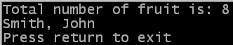

Simple Processing: Addition operator
The next operator is the addition symbol, +. When used with numeric
variables (and other numeric values) it performs the mathematical function
of adding them together (addition). When used with string variables (and
other strings) it joins them together (concatenation). You cannot mix
numeric types and strings using the addition operator without first
converting them (this has partially been covered with the Str command
and will be completed in a later chapter).
Example using numeric variables
The example below shows some of the uses of the addition operator. You
can get the source here.
OpenConsole()
; Part 1 - Simple example of using the addition operator
DefType.l apples
DefType.l oranges
apples = 5
oranges = 3
fruit.l = apples + oranges
PrintN("Total number of fruit is:")
PrintN(Str(fruit))
; Part 2 - Multiple operators can be used in the same calculation
fruit = 2 + 4 + 1 + apples + 6 + 2 + oranges + 9
PrintN("New fruit total:")
PrintN(Str(fruit))
; Part 3 - Shortcut version of the addition operator
apples + 2
PrintN("New number of apples:")
PrintN(Str(apples))
PrintN("Press return to exit")
Input()
CloseConsole()
End
 The first part of the example shows a simple example of using the addition
operator to add the values of two numeric variables. This value is then used
with the equals operator to set the value of the fruit variable.
This value is then printed out as shown in the previous page. This also shows
how to define a variable by using it rather than with the DefType command. In
this case the variable fruit is created when it is used in the
calculation.
The first part of the example shows a simple example of using the addition
operator to add the values of two numeric variables. This value is then used
with the equals operator to set the value of the fruit variable.
This value is then printed out as shown in the previous page. This also shows
how to define a variable by using it rather than with the DefType command. In
this case the variable fruit is created when it is used in the
calculation.
The next part of the example shows that you can use more than one addition
operator in the same calculation. Any item which can be used as a numeric value
can be used in the calculation, and this example shows mixing variables and
numbers. This will add up all the numeric values and store the value (through
the equals operator) in the fruit variable.
The final part of the example shows how to use the addition operator in
a shortcut mode. The calculation must be on a line by itself and the result of
the calculation should not be used anywhere (for example with any other operator
or as a parameter to a command). The leftmost item in the calculation must
be a variable because when working like this the variable on the left is
increased by the remainder of the calculation. In this example the apples
variable is increased by 2.
Example using strings
This example shows the effect of using the addition operator with strings. As
mentioned above, strings are concatenated when the addition operator is used.
You can find the source here.
OpenConsole()
; Part 1 - Adding items and using the result as a parameter
fruit.l = 8
PrintN("Total number of fruit is: " + Str(fruit))
; Part 2 - Adding multiple items
DefType.s forename, surname
forename = "John"
surname = "Smith"
person$ = surname + ", " + forename
PrintN(person$)
PrintN("Press return to exit")
Input()
CloseConsole()
End

The first part of the example demonstrates adding two strings together. The fixed
string and the return value of the Str command (a string) are joined together. The result
of the addition is used directly as the parameter to the PrintN command.
Part two of the example shows the addition of three strings (the surname
variable, a fixed string and the forename variable), the result of which
is used with the equals operator and is stored in the person$. The
person$ variable is created at this point (and also shows that .s and $
both represent string types - remember to always use the suffix you created the
variable with though!).